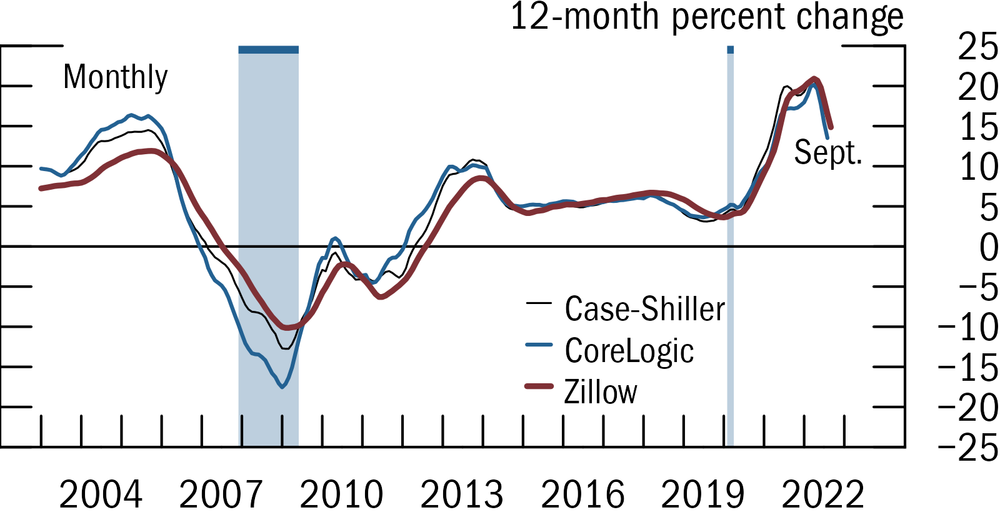

This is an R package that allows users to replicate Fed-style plots (e.g. FSR, Tealbook) within ggplot. It contains a theme and several ggplot functions to customize and export figures.
It’s currently a work-in-progress (version 0.2), with planned improvements including:
- Wrappers around options, so they are less verbose (e.g.
scale_*below). - Documentation and website.
- Better automated placement of legend and text labels.
- Better testing of different OSes and chart types.
- Document that fonts and other options can be changed through
options()
Quick example
(Also see here for a self-contained script)
library(fedplot)
ggplot(plotdata, aes(x = Date, y = value, group=source)) +
geom_recessions()
geom_hline(yintercept = 0, linewidth = getOption("fedplot.linewidth_adj"), linejoin = "mitre", lineend = "round") +
geom_line(aes(color=source, linewidth=source), na.rm = T, linejoin = "mitre", lineend = "round") +
labs(y = "12-month percent change") +
scale_x_date(minor_breaks=seq(from=as.Date("2003-01-01"), to=as.Date("2023-01-01"), by="1 years"),
breaks=seq(from=as.Date("2004-06-30"), to=as.Date("2023-06-30"), by="3 years"),
date_labels="%Y",
expand=expansion(mult=.05)) +
scale_y_continuous(sec.axis = dup_axis(),
breaks = seq(-25, 25, by=5),
limits = c(-25, 25),
expand = expansion(mult=0),
labels = scales::label_number(style_negative = "minus")) +
annotate_last_date(nudge_y = -3, nudge_x = 300)
theme_fed(legend_position = c(.8, .1))
save_plot('my-figure', size='narrow', extension='png')
Installation
To install or update fedplot:
## Install current version from GitHub
devtools::install_github("fedplot/fedplot", build_vignettes=FALSE)
## Then load the package as you would any other
library(fedplot)To-Do
- Add documentation and pkgdown website
- Convert
line.Rinto a vignette. - Add examples for bar charts
- Add wrappers to the geom_hline (maybe set as an option to
theme_fed), to the scale_* functions, and to geom_line (so it uses the group aes into its color and linewidth aes, plus the other options).
Possible improvements
- Ensure that certain geometries (e.g. recession bars) are always in the background, independently on the order in which they were added. This can be achieved with e.g.
move_layersfrom thegginnardspackage.
Acknowledgments
- Recession bars as well as some design ideas are based on the great
cmapplotlibrary mantained by the Chicago Metropolitan Agency for Planning.
Useful references:
-
ggplot_addmagic: https://www.simonpcouch.com/blog/ggplot-pipe-plus/ , https://yutani.rbind.io/post/2017-11-07-ggplot-add/ - Editing the DESCRIPTION file: https://r-pkgs.org/description.html , https://kbroman.org/pkg_primer/pages/depends.html , https://cran.r-project.org/doc/manuals/r-release/R-exts.html#Package-Dependencies